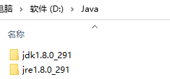
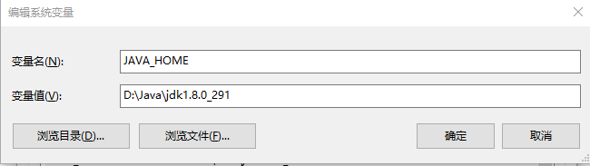
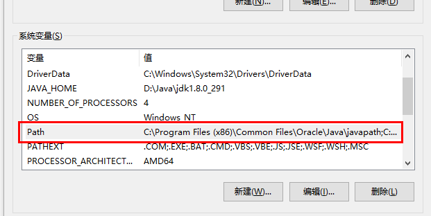
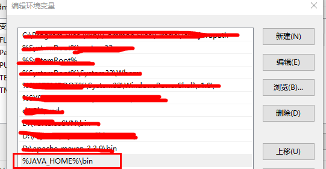
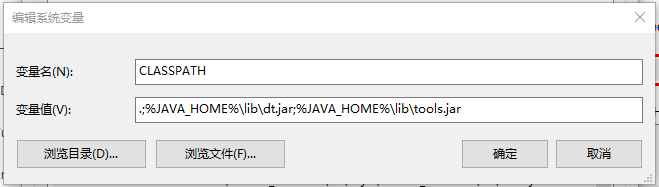
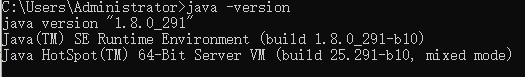
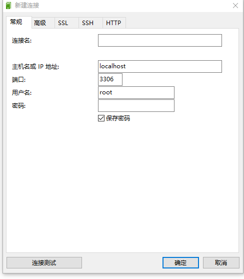

下载jdk,mysql,navicat
jdk 下载地址：jdk1.8
mysql 下载地址：mysql8
navicat 下载地址: navicat
安装java
直接双击 安装文件，选择好路径，然后一路下一步就可以。
安装好后

安装jre的时候记得跟jdk放到一个目录下
然后就是配置环境变量。

在path中添加

%JAVA_HOME%\bin

新增class path
.;%JAVA_HOME%\lib\dt.jar;%JAVA_HOME%\lib\tools.jar

配置好运行java -version

看到下面的说明java环境配置OK了
安装 mysql
直接打开安装文件，一路next就可以了
设置localhost可以连接
管理员运行 doc，进入到 mysql的安装目录的bin目录下
执行
alter user 'root'@'localhost' identified with mysql_native_password by 'root'
flush privileges;
安装navicat
由于这个软件是收费的，所以给了个下载网址，是可以免费使用的，这里就不过多说明，大家自行安装
安装好后，新建链接

输入相关信息，然后点击 链接测试 如果提示成功，说明数据库安装没有问题
到此后端服务的环境已经准备好了。